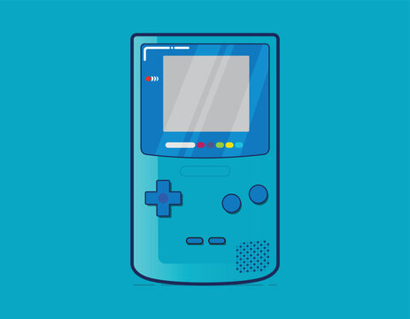

Nintendo Game Boy Color (GBC)
O Game Boy Color é uma consola portátil de 8-bits, desenvolvida pela Nintendo e lançada em 21 de outubro de 1998 no Japão e em Novembro em outros mercados. É o sucessor do Game Boy.

Componentes do Game Boy Color e um dos seus jogos mais marcantes
- Ecrã TFT Cores
- Capacidade de apresentar até 56 cores em simultâneo de uma palete de 32.768.
- Infravermelhos
- Porta de transferência de dados sem fios, muito usada em Pokémon.
- Cabo-Link
- Cabo usado para jogar em modo multiplayer ou para troca de pokémons. Os infravermelhos na altura, não tinham uma fiabilidade tão grande para este tipo de eventos
- Pokémon Silver
- O primeiro jogo de Pokémon a ser lançado para o Game Boy Color, o grande sucessor a primeira geração de Pokémon.